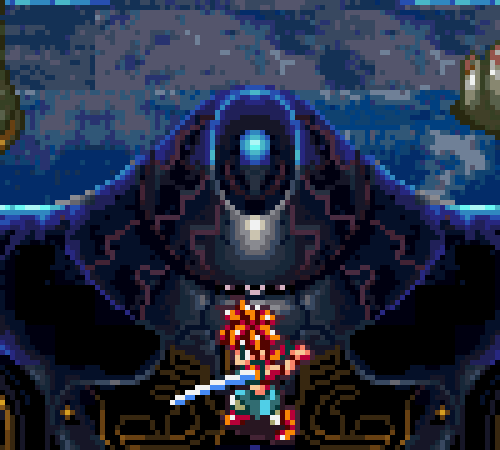

A few words for Akira!
In the vast universe of manga and anime, few names shine as brightly as Akira Toriyama’s. His influence has left an indelible mark on global pop culture, transforming how fans around the world experience and understand the art of storytelling. Born on April 5, 1955, in Nagoya, Japan, Toriyama began his career as a manga artist at a time when the medium was still developing. However, his innate talent and unique vision quickly propelled him to fame, marking the start of a golden age in manga and anime. His most emblematic work, "Dragon Ball", not only redefined the genres of action and adventure but also set new standards for narrative and character development.
Impact on Chrono Trigger
Toriyama involvement in "Chrono Trigger" had a significant impact. His artistic style not only helped give the game a memorable and appealing look but also influenced the narrative and how players connected with the characters. The visual quality and design consistency greatly contributed to the game's immersion and enjoyment.
Akira Toriyama’s role in "Chrono Trigger" is a brilliant example of how his artistic talent and creativity have left a lasting mark on the world of video games. His work on character and enemy design helped bring one of the most beloved games in RPG history to life.